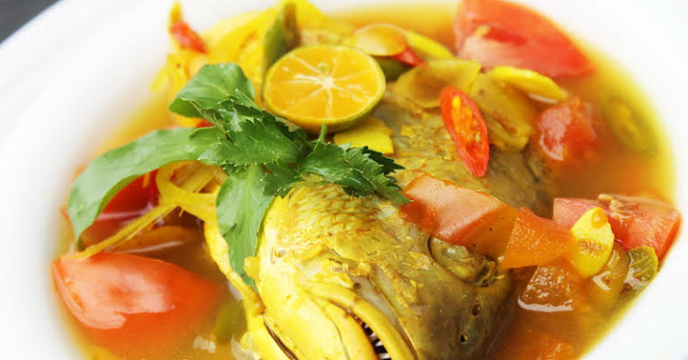

<< Daftar Resep
Kuliner Maluku - Ikan Kuah Kuning
Ikan Kuah Kuning
Bahan |
Cara Membuat |

Kepulauan Maluku yang kaya dengan hasil ikan laut dan rempah-rempah ini memang terkenal dengan masakan khas yang berasal dari ikan, salah satunya yaitu "Ikan Kuah Kuning". Sesuai namanya sajian ini berwarna kuning cenderung oranye yang berasal dari rempah kunyit. Sajian Ikan yang dimasak dengan daun kemangi, bumbu, rempah serta perasan jeruk nipis.
Bahan-bahan:
500 gr ikan, potong-potong
2 buah jeruk nipis
2 lembar daun salam
2 cm lengkuas, geprek
Secukupnya cabe rawit, biarkan utuh
2 batang sereh, geprek
2 buah tomat, potong2
2 batang kemangi, siangi
2 batang daun bawang, iris
500 ml air
Secukupnya garam, gula, penyedap (optional)
Bumbu halus:
8 butir bawang merah
5 butir bawang putih
3 cm kunyit
3 cm jahe
3 butir kemiri, sangrai
3 buah cabe merah besar (optional)
Cara Membuat:
Ikan dicuci bersih, kucuri air jeruk nipis. Campur garam sedikit. Aduk rata. Diamkan 15 menit. Cuci bersih kembali.
Tumis bumbu halus bersama sereh, lengkuas, dan daun salam, sampai harum.
Masukkan ikan dan daun bawang, aduk rata.
Tuangkan air. Tunggu sampai air mendidih. Masukkan garam, gula, dan penyedap. Aduk rata. Masak sampai ikan matang sempurna.
Tambahkan perasan air jeruk nipis, cabe rawit, tomat, dan daun kemangi. Masak sebentar. Angkat.
Kembali Keatas
<< Daftar Resep